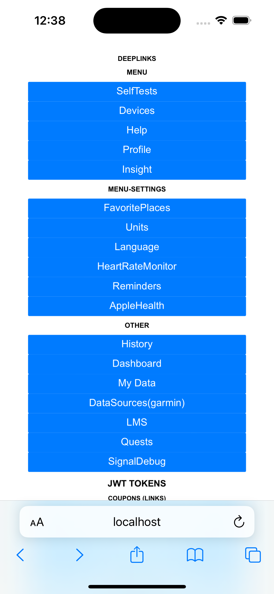

Amin Benarieb
iOS dev
How to Debug iOS Deep Links with a Local Server
Problem
Testing interactions within your iOS app that require a custom web page—such as engaging with payment options in a pop-up browser via universal links or deep links—can be challenging. Capturing and modifying URLs, handling deep links that close pop-up browsers, and ensuring that various types of links work seamlessly within your app can be time-consuming without the right tools.
Solution
To streamline the testing process, you can set up a local server that hosts a custom HTML page containing all the links you need to test. This approach allows you to open the web page in the iOS Simulator and interact with your app’s deep links in a controlled environment.

Setting Up a Local Server with Python
Python provides a simple way to set up a local HTTP server. Here’s a Python script that serves an HTML file containing your test links:
from http.server import HTTPServer, BaseHTTPRequestHandler
class Serv(BaseHTTPRequestHandler):
def do_GET(self):
if self.path == '/':
self.path = '/test.html'
try:
file_to_open = open(self.path[1:]).read()
self.send_response(200)
except FileNotFoundError:
file_to_open = "File not found"
self.send_response(404)
self.end_headers()
self.wfile.write(bytes(file_to_open, 'utf-8'))
httpd = HTTPServer(('localhost', 8081), Serv)
httpd.serve_forever()
Steps to Set Up:
-
Create Your HTML File:
Save your test links in an HTML file named
test.html. Here’s an example of whattest.htmlmight look like:<html> <body> <div> <a href="yourapp://branch/Settings/FavoritePlaces" class="button">Favorite Places</a> </div> <div> <a href="yourapp://action/RestorePurchase" class="button">Restore Purchases</a> </div> <div> <a href="yourapp://branch/Payment/Point/330" class="button">Branch Payment (330)</a> </div> <div> <a href="yourapp://action/OpenLink?url=https%3A%2F%2Fstage-app.yourapp.com%2Fpayments%2Fplans%2Fpromo-special%2F%3Fcoupon%3DPRM_may2FREE%26require_token%3Dtrue" class="button">Stage Coupon</a> </div> <div> <a href="yourapp://action/payment_form/plans/promo-special?coupon=PRM_may2FREE" class="button">Payment Form with Coupon</a> </div> <div> <a href="yourapp://action/web_payment?status=success" class="button">Web Payment Success</a> </div> <!-- Add more links as needed --> </body> </html>Replace
yourappwith your app’s URL scheme. -
Save the Python Script:
Save the Python script above in a file named
local_server.py. -
Run the Local Server:
Open a terminal, navigate to the directory containing
local_server.py, and run:python local_server.pyThis starts a local server on
localhostat port8081. If port8081is busy, you can change the port number in the script:httpd = HTTPServer(('localhost', 8082), Serv) -
Access the Test Page:
In the iOS Simulator, open Safari and navigate to
http://localhost:8081. You should see yourtest.htmlpage with all your test links.
Testing Deep Links
With your local server running and accessible from the iOS Simulator, you can now test how your app handles various deep links:
- Click on the Links: Interact with the links in
test.htmlto see how your app responds. - Verify Navigation: Ensure that your app opens and navigates to the correct screens.
- Test URL Parameters: Modify URL parameters in
test.htmlto test different scenarios. - Handle Pop-Up Browsers: If your app uses a pop-up browser (e.g.,
SFSafariViewController), test how deep links from your web page close the browser and return control to the app.
Further Thoughts
Setting up a local server for testing deep links offers several advantages:
- Efficiency: Quickly test web interactions without deploying changes to a live server or rebuilding your app.
- Flexibility: Easily add, remove, or modify test links in the
test.htmlfile. - Isolation: Work in a controlled environment without affecting real users or requiring internet access.
Connect with Me
Have a comment or question? Feel free to reach out to me on Twitter or LinkedIn.